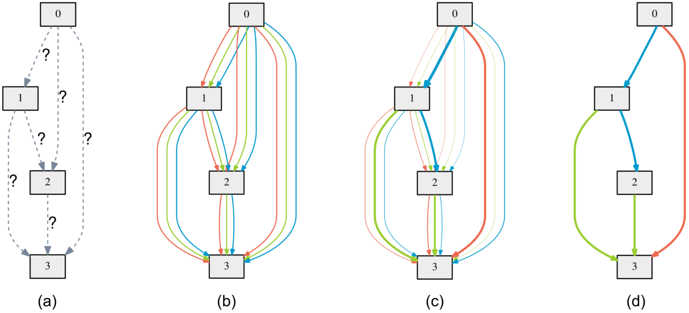

One supernet holds every candidate; DARTS makes the choice trainable by gradient descent
On this page
Sampling-based search trains thousands of separate networks, one per candidate. One-shot NAS trains one network that contains them all, a supernet (Figure 1). The search then either samples one path through it at a time or blends every op on an edge by learned architecture weights.
The search runs once, before the final model is trained. The supernet's weights, and in DARTS the architecture weights, update on every training step, and the winning architecture is then retrained from scratch.
Every NAS method has a search space, a search strategy and an evaluation step (Search space, search strategy and evaluation in Neural Architecture Search Basics). A cell is a small graph whose nodes are feature maps and whose edges each apply one op; the network stacks copies of it (Reinforcement-learning controllers).
Train one network once, and every candidate inside it borrows its weights. Most modern NAS methods rely on weight sharing: one giant supernet contains every candidate as a sub-network, and one subnet is one path through the layers (Figure 2).
The supernet trains by sampling one path per step and updating only that path's weights (Single Path One-Shot). The listing is a one-layer supernet: three convolutions (taught in CNN Basics: Convolution, Stride and Pooling) share the layer, and choice picks the path.
import torch, torch.nn as nn, torch.nn.functional as F
class SuperNet(nn.Module):
def __init__(self):
super().__init__()
self.ops = nn.ModuleDict({
"k3": nn.Conv2d(3, 16, 3, padding=1),
"k5": nn.Conv2d(3, 16, 5, padding=2),
"k7": nn.Conv2d(3, 16, 7, padding=3),
})
self.fc = nn.Linear(16, 10)
def forward(self, x, choice):
h = F.relu(self.ops[choice](x))
# average over height and width
pooled = h.mean(dim=(2, 3))
return self.fc(pooled)Training samples a fresh path on every step, with torch and F from the SuperNet listing.
import random
supernet = SuperNet()
params = supernet.parameters()
opt = torch.optim.SGD(params, lr=0.01)
for x, y in train_loader:
# one path per batch
choice = random.choice(["k3", "k5", "k7"])
out = supernet(x, choice)
loss = F.cross_entropy(out, y)
opt.zero_grad()
loss.backward()
opt.step()Once the supernet is trained, score subnets with the shared weights, pick the winner, and always retrain the winner from scratch: the shared weights are good enough for ranking candidates, not for final accuracy.
ENAS (Pham et al. 2018) shares weights the same way but lets an RL controller choose the path instead of a uniform draw.
Differentiable search (DARTS) makes the search itself trainable by gradient descent. It uses a continuous relaxation: every edge between nodes holds all candidate ops at once and blends them through a softmax (taught in the softmax section of Cross-Entropy Loss) of the architecture weights \(\alpha\), one learnable number \(\alpha _{o}\) per candidate op \(o\) on each edge (\(\alpha\) here is not a learning rate).
For example, an architecture weight higher than the others by one gives its op about e times the weight of each other op, and the shares add to 1.

The listing is one DARTS edge with three candidate ops on \(c\) channels: alpha holds the architecture weights \(\alpha\), and forward is the blend line of the card. After the search, the kept op is block.ops[block.alpha.argmax()].
import torch, torch.nn as nn, torch.nn.functional as F
class DartsBlock(nn.Module):
def __init__(self, c):
super().__init__()
self.ops = nn.ModuleList([
nn.Conv2d(c, c, 3, padding=1),
nn.Conv2d(c, c, 5, padding=2),
nn.Identity(),
])
a = torch.zeros(3)
self.alpha = nn.Parameter(a)
def forward(self, x):
w = F.softmax(self.alpha, dim=0)
outs = [op(x) for op in self.ops]
# weighted sum of all ops
return sum(wi * o for wi, o in zip(w, outs))There are now two things to learn: the architecture weights \(\alpha\) and the ordinary network weights \(w\). DARTS nests them as a bilevel optimization, with training loss \(L_{\text{train}}\) and validation loss \(L_{\text{val}}\).
Take the same edge with two settings of \(\alpha\), and for each one train \(w\) on the training batches. The 5x5 conv has the most weights, so it fits the training batches best, partly by memorizing them; on held-out validation batches the 3x3 conv wins.
Judged on \(L_{\text{train}}\), the search would pick 5x5; judged on \(L_{\text{val}}\), it picks 3x3. So \(\alpha\) is judged on validation data, but only after \(w\) has been trained for that \(\alpha\). The card writes these two jobs as two nested problems.
Each search step alternates two gradient steps (Figure 4 and the card below): one for the architecture weights \(\alpha\) on a validation batch with learning rate \(\eta _{\alpha }\), then one for the op weights \(w\) on a training batch with learning rate \(\eta _{w}\).
Raising \(\eta _{\alpha }\) lets one op pull ahead before the op weights have learned what each op can do; lowering it leaves the architecture weights close to uniform when the search ends, so the final pick rests on tiny differences (Figure 5).
At the start of a search the convolution kernels are untrained, so their outputs only add error, while skip passes its input through unchanged and needs no training. Skip is the only op that already helps, so \(\alpha\) first moves toward it. A convolution helps only once its kernel \(w\) has been trained (a kernel is a small filter, as in Kernels as pattern detectors), and inside the blend each kernel learns only what the other ops leave unexplained. Each op's architecture weight moves in proportion to its current share, so an op that falls behind early catches up slowly even after its kernel is trained.
The toy run below takes one edge whose input is a random signal and whose target is that signal passed through a 3-tap low-pass filter, plus noise (taught in How FIR and IIR Filters Shape Magnitude and Phase). A low-pass filter has all taps positive, so a trained 3x3 kernel shows all three bars above the midline. Each kernel is kept at a fixed size, as batch norm does in DARTS, so only \(\alpha\) sets the blend. The toy counts 20 search steps as one epoch and runs 50 epochs, the length of the official search.
Figure 5. 1Skip leads; 2a trained 3x3 wins; bigger \(\eta _{\alpha }\) lifts 1.
In this run the 3x3 conv catches up before epoch 50, but with other data the skip lead can last to the end, which is the skip collapse in Section 5.
The listing is the simplest, first-order form, where \(\alpha\)'s gradient skips how \(w'\) depends on \(\alpha\): net is a network built from DartsBlocks, its parameters split by name into the architecture weights and the network weights, each with its own optimizer.
alphas, weights = [], []
for n, p in net.named_parameters():
if n.endswith("alpha"):
alphas.append(p)
else:
weights.append(p)
w_opt = torch.optim.SGD(weights, lr=0.025)
a_opt = torch.optim.Adam(alphas, lr=3e-4)
batches = zip(train_loader, val_loader)
for (x_tr, y_tr), (x_val, y_val) in batches:
# alpha on validation data
a_opt.zero_grad()
val_loss = F.cross_entropy(net(x_val), y_val)
val_loss.backward()
a_opt.step()
# w on training data
w_opt.zero_grad()
loss = F.cross_entropy(net(x_tr), y_tr)
loss.backward()
w_opt.step()A GPU-day is one graphics processor running for one full day. Params counts the model's weights in millions, and top-1 means the first guess is right. NASNet-A came from an RL controller that trains every sampled child (Reinforcement-learning controllers), and AmoebaNet-C from aging evolution, which keeps mutating the best of a sampled group (Neural Architecture Search Basics).
ProxylessNAS is latency-aware: its search objective charges for latency, the time one prediction takes on the target hardware. DARTS's ~4 GPU-days use the full look-ahead update of Section 2, and the first-order form takes 1.5; ProxylessNAS's ~8 are 200 GPU-hours.
RL and evolution found great architectures for thousands of GPU-days; DARTS got comparable results for about 4. That cost collapse is why weight sharing won.
The best-known result of RL search, EfficientNet, is covered in Neural Architecture Search Basics.
A DARTS search is its own training job, run before the real model exists: the first-order loop of Section 2, one batch for \(w\) and one held-out batch for \(\alpha\) per step. After the search, keep the strongest op on each edge and train that network from scratch with an ordinary loop.
The official search script (quark0/darts, cnn/train_search.py and cnn/architect.py) runs 50 epochs at batch size 64, and half of the CIFAR-10 training set trains \(w\) while the other half trains \(\alpha\). The listing is its optimizer setup and one search step, with model the search network and criterion its cross-entropy loss.
w_opt = torch.optim.SGD(model.parameters(), lr=0.025, momentum=0.9, weight_decay=3e-4)
sched = torch.optim.lr_scheduler.CosineAnnealingLR(w_opt, T_max=50, eta_min=0.001)
a_opt = torch.optim.Adam(model.arch_parameters(), lr=3e-4, betas=(0.5, 0.999), weight_decay=1e-3)
# one α step: a batch of 64 from the half of CIFAR-10 kept for α
a_opt.zero_grad()
criterion(model(x_val), y_val).backward()
a_opt.step()
# one w step: a batch of 64 from the half kept for w
w_opt.zero_grad()
criterion(model(x), y).backward()
torch.nn.utils.clip_grad_norm_(model.parameters(), 5)
w_opt.step()
sched.step() # once per epoch, 50 epochsNAS finds the architecture. Knowledge Distillation then teaches that small model to behave like a big one: two halves of the same goal, big-model accuracy on a small-model budget. Pruning and quantization (Post-Training Quantization and Quantization-Aware Training) shrink whatever comes out further.